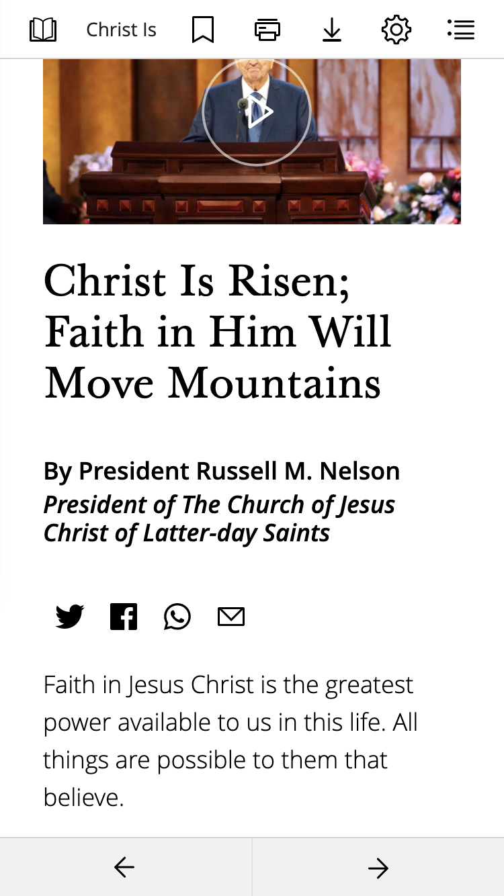
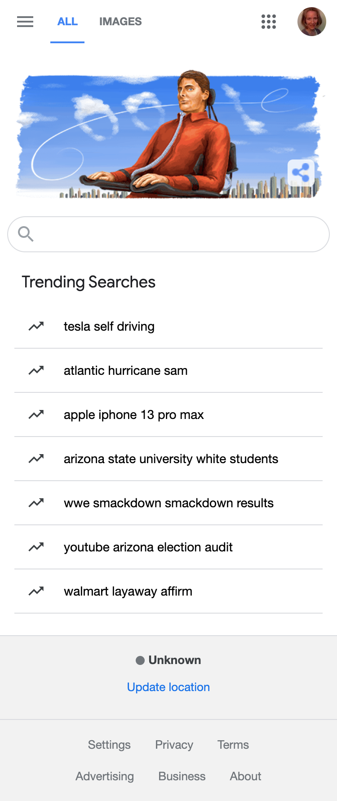

Visual Hierarchy
The Church of Jesus Church
www.churchofjesuschrist.org
This page found on the church website is a great example of visual hierarchy. The title of the talk is given the highest importance with the largest font. The name and title of the person giving the speech has the medium level of importance. The transcript is not in bold or italicized. It is less important because many people will play the video and not even read the text.
White Space and Clean Design
www.google.com
The Google page is a great example of white space and clean design. The page only has a picture, search bar, and trending searches. This makes the search bar easy to find.
Repetition
Target
www.target.com
The Target page is a great example of repetition. Notice their logo colors of red and white are repeated thoughout the page. Their picture, menu, key words, and buttons feature the color red.